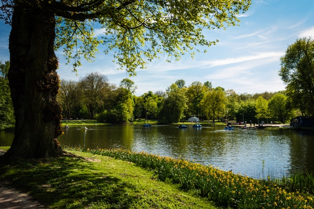
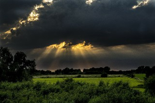
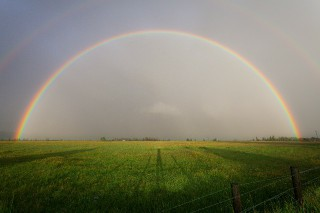

Weather Wherever - Gallery
-
A friendly neighboorhood member of franklin was walking down this pathway and couldn't help but take a picture of this sight.
- 
After a wonderful picnic at the park this family captured their favorite view of the pond in Franklin's favorite park.
- 
Out for an early morning jog in Greenville. This picture was taken next to the highway coming into town. Greenville all wrapped up in one picture.
-
The Springfield park is the place to be on a beautiful fall afternoon. With golden and orange leaves all around, this is a sight that you won't soon be forgetting.
-
Greenville has the beautiful landscape. It also has some of the most memorable storms. Check out this picture submitted to us of the lightning storm last spring.
- 
Springfield does not have the most farm land that you will see, but once you catch a glimpse of a rainbow on the way into town you will never see it the same again.